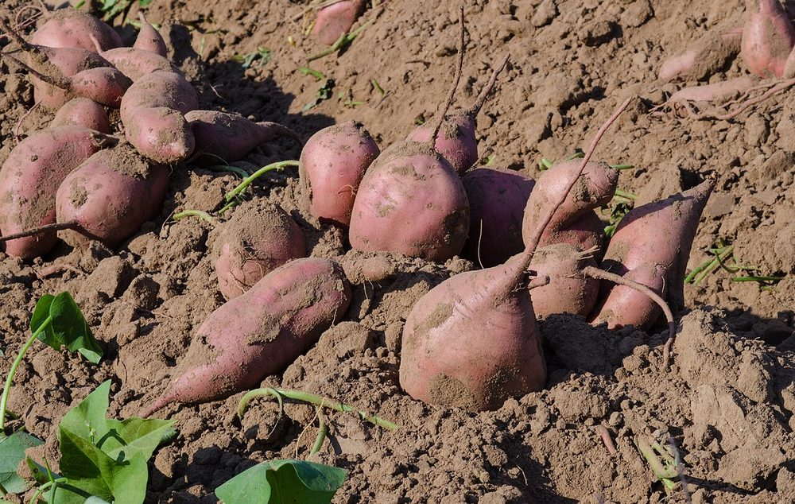

Culture vivrière
Patate douce à chair orange
Vitamine A, transformation
- Cycle 90 à 120 jours
- Mise à jour 2026-10-21
- Niveau de confiance partiel

Présentation et utilisations
Culture rapide sur sol léger, riche en bêta-carotène. Deux marchés : le frais et la transformation (farine, purée), avec un intérêt nutritionnel reconnu.
Climat et sols
Chaleur, sol meuble et bien drainé ; elle supporte une certaine sécheresse mais pas l'engorgement. Les sols sableux donnent des racines plus régulières.
Variétés adaptées
Les variétés à chair orange sont recherchées pour la vitamine A. Les noms disponibles localement ne sont pas documentés ici : demander à un service de vulgarisation les variétés testées dans la zone.
Calendrier cultural
Plantation en début de saison des pluies ; récolte 3 à 4 mois plus tard. Possible en contre-saison si l'irrigation est maîtrisée.
Préparation du terrain
Buttes ou planches surélevées pour faciliter l'enracinement et limiter la pourriture. Sol ameubli en profondeur, matière organique compostée.
Semis et plantation
Plantation par boutures de tige (fragments de tiges saines), enfoncées obliquement dans la butte. Utiliser des boutures issues de plants sains, sans symptôme de virus.
Entretien, fertilisation, irrigation
Sarclage jusqu'à ce que le feuillage couvre le sol. Éviter l'excès d'azote (feuillage au détriment des racines). Irrigation régulière en installation, puis modérée.
Maladies, ravageurs et prévention
Surveiller les viroses (feuilles marbrées), les charançons et les pourritures de racines en sol détrempé. La prévention passe par des boutures saines, la rotation et le drainage.
Récolte et post-récolte
Récolter à maturité, en soulevant la butte sans blesser les racines. Éviter les récoltes en sol détrempé.
Conservation et transformation
Les racines se conservent mal longtemps : vente rapide, stockage à l'ombre dans un local ventilé. La transformation en farine prolonge la conservation.
Coûts, rendements et débouchés
Débouchés : frais, farine, purée, programmes nutritionnels. Aucun prix vérifié ici. Postes de dépense : boutures, préparation des buttes, main-d'œuvre de récolte, séchage pour la farine.
Tutoriel étape par étape
- 1. Préparer les buttes
Faites des buttes hautes, en terre meuble, avec du compost bien mûr.
- 2. Prélever des boutures saines
Prenez des tiges vigoureuses, sans tache ni déformation ; coupez des morceaux de plusieurs nœuds.
- 3. Planter
Plantez en biais, arrosez si la terre est sèche, espacez pour que le feuillage s'étale.
- 4. Entretenir
Sarclez tôt, surveillez les maladies, évitez l'eau qui stagne.
- 5. Récolter et trier
Soulevez la butte, triez les racines saines, vendez vite ou transformez en farine.

USDAgov · Public domain · Wikimedia Commons
Sources, vérification et limites
- Base de connaissances interne · knowledge/agronomie.md (consulté le 2026-10-21)
Limites de cette fiche. Variétés, densités et rendements non documentés. Le prix du frais et de la farine n'est pas vérifié.
Dernière mise à jour : 2026-10-21. Les prix, rendements et calendriers locaux ne sont mentionnés que lorsqu'ils sont documentés ; dans le doute, la fiche le dit.